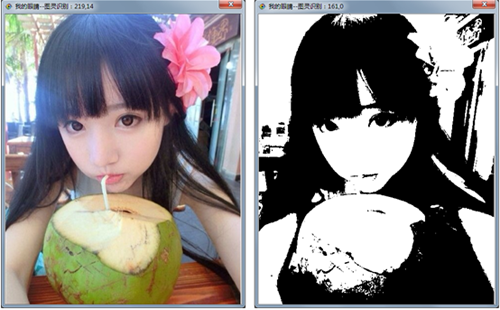

| 命令名称 | Filter_Binaryzation 二值化 |
| 命令功能 | (针对彩色图像处理)二值化滤镜 |
| 语法格式 | TURING.Filter_Binaryzation(value) |
| 参数说明 | value：字符串型，色阶阈值（范围：0-255） 或者：指定颜色串BBGGRR-BDGDRD（"0000FF-000080|00FFFF"）(反色效果："@BBGGRR-DBDGDR") 或者：通过智能筛选黑白点数均衡取得（"ai"） 或者：通过最大类间方差法[Otsu]取得（"auto"） |
| 返回值 | 无 |
| 按键精灵 |
复制代码
'获取屏幕图像数据
Call TURING.Pixel_FromScreen(0,0,200,100)
'显示获取的图像
Call TURING.Pixel_Preview()
'二值化处理
Call TURING.Filter_Binaryzation("0-128")
'Call TURING.Filter_Binaryzation("auto") '通过最大类间方差法[Otsu]取得
'Call TURING.Filter_Binaryzation("0000FF-000080|00FFFF")
'反色效果："@0000FF-000080|00FFFF"
'Call TURING.Filter_Binaryzation("@0000FF-000080|00FFFF")
'图像预览
Call TURING.Pixel_Preview()
|
| 滤镜效果 |  |